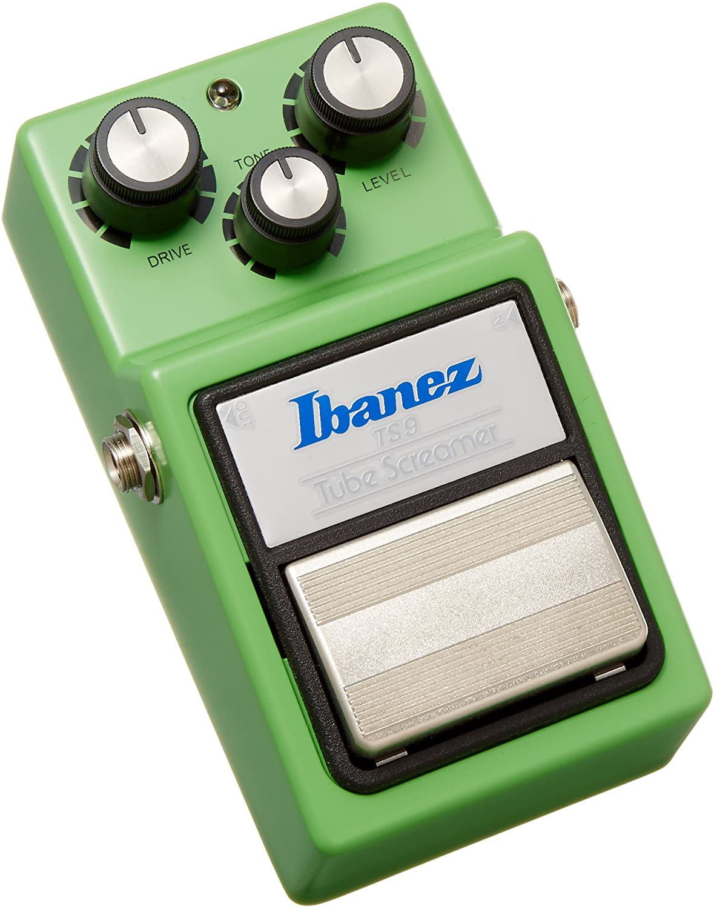
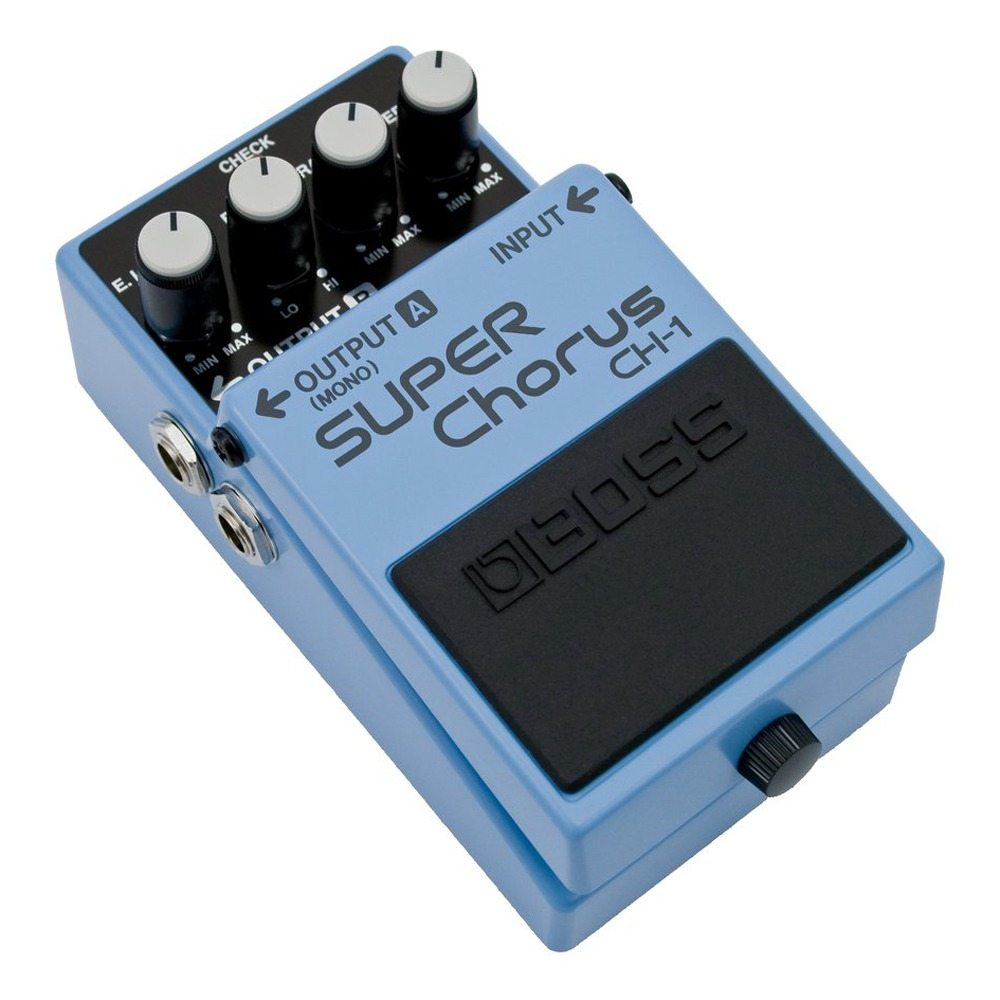
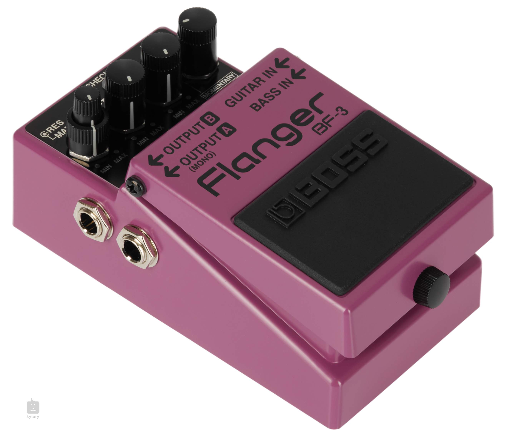
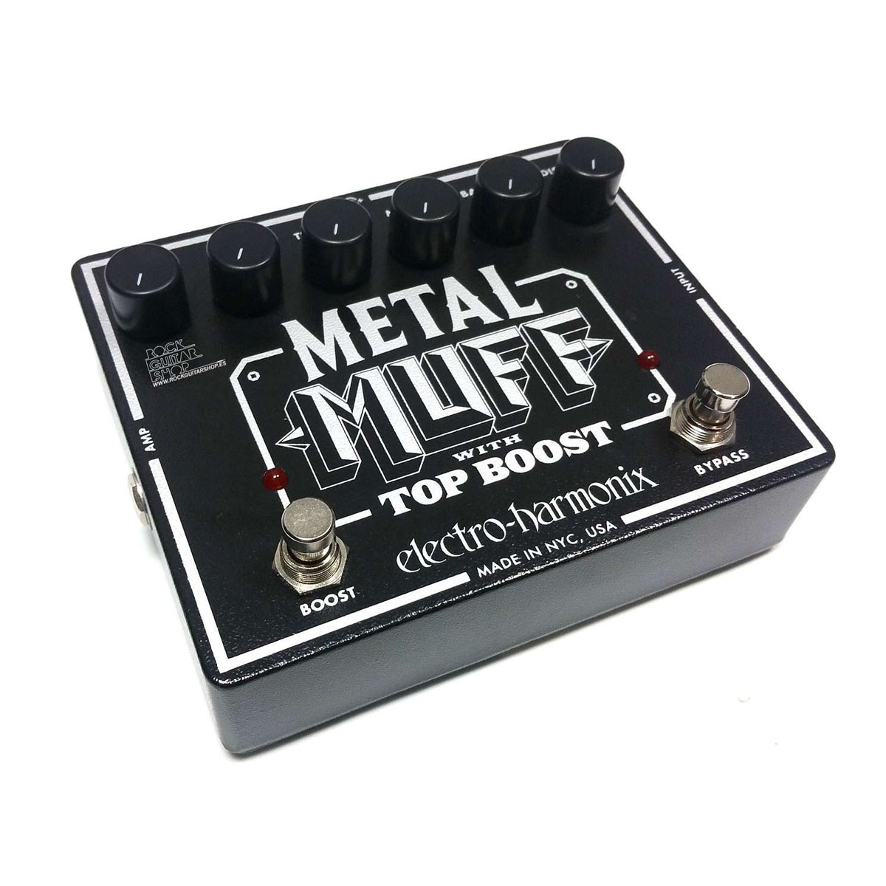

Pedal de efecto Boss Super OverDrive SD-1 amarillo
Este pedal de efectos permite alterar el sonido de tu instrumento y, de esta manera, explorar nuevas posibilidades sonoras.
ver

Pedal Distortion BOSS DS-1
La DS-1 Distortion es un verdadero icono en el mundo de los efectos de guitarra. Presentado en 1978
ver

Ibanez TS9 Tube Screamer Effects Pedal
El TS-9 es la reedición de uno de los pedales drive más clásicos de la historia, su sonido es cálido y definido, ideal para combinarlo con amplificadores a tubo, dado que los satura de manera muy natural.
ver

Pedal de efecto Boss Super Chorus CH-1 azul
Classic BOSS chorus pedal with clean, brilliant sound for guitar and keyboards
ver

BOSS FLANGER PEDAL BF-3
Sobre la base del legado de 20 años del famoso BOSS BF-2, el nuevo pedal Flanger BF-3 brinda a los guitarristas y bajistas una versión actualizada del clásico BOSS Flanger con los sonidos de Flanger estéreo más gruesos jamás vistos.
ver

Electro-Harmonix Metal Muff con pedal de distorsión Top Boost
Tres potentes bandas de ecualización esculpen los medios y 6 controles dan forma al sonido con precisión para tu ritmo, desde mercurio deslizándose hasta escoria de horno alto de vientre de plomo.
ver